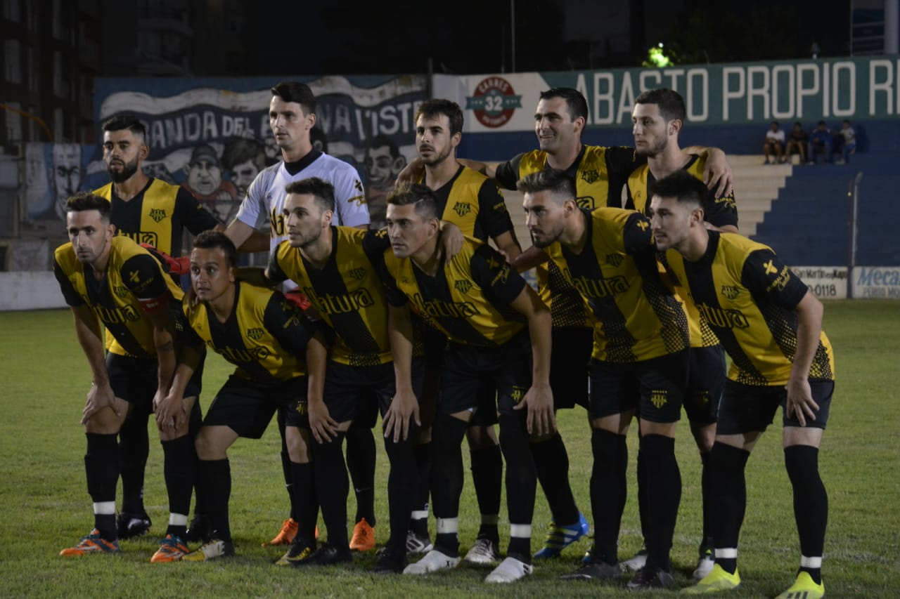

Convocan a intendentes de cuatro ciudades clave por la crisis de Cotreco.
La provincia se reunirá con los mandatarios de Rio Cuarto, Villa María, Rio Tercero y Carlos Paz para analizar una salida conjunta ante la situación de la empresa de higiene. En el equipo de Llamosas por ahora se impone la postura de crear un ente estatal para reemplazar a la prestataria.
HIGIENE URBANA
La oposición propone colaborar con Llamosas en una solución.
Calor Ordoñez, jefe de Cambiemos, indicó que el bloque está a disposición del jefe comunal. "Es una situación grave", declaró.
Acción Juvenil se llevó la copa de campeón del año.
El elenco de General Deheza perdió anoche por 2 a 1 con Juventud Unida de Río Cuarto, pero se quedó con el título por haber ganado el cotejp de ida por 2 a 0. Los dos equipos ya están clasificados para el próximo Torneo Regional Federal Amateur.
El plantel de Acción Juvenil de General Deheza anoche en el estadio "9 de Julio".

ABUSOS SEXUALES
A nivel local, no hubo más denuncias en la Justicia pero sí en las redes.
La acusación de Fardín contra Darthés alentó a otras mujeres. Una psicologa con experiencia en acompañamiento a las victimas señala que las redes son una herramienta para lograr justicia.
MENINGITIS
Por falta de dosis, el 25 por ciento de los niños no fue vacunado.